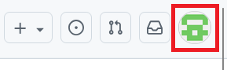
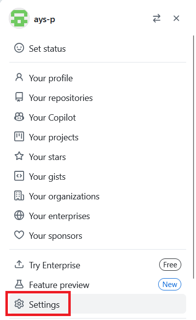
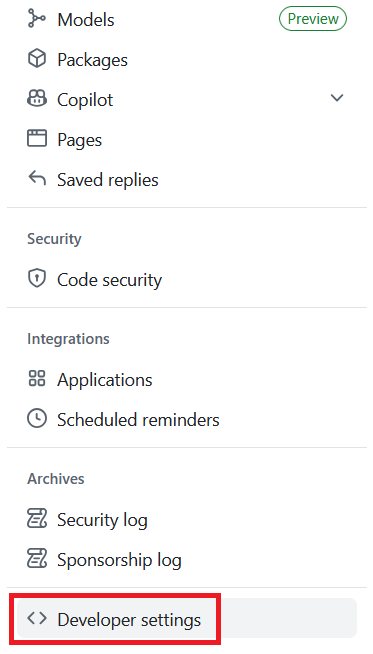
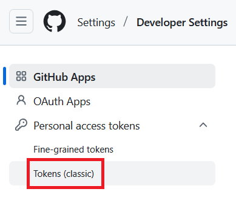
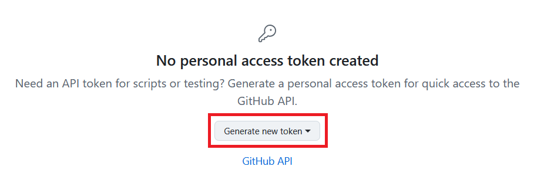
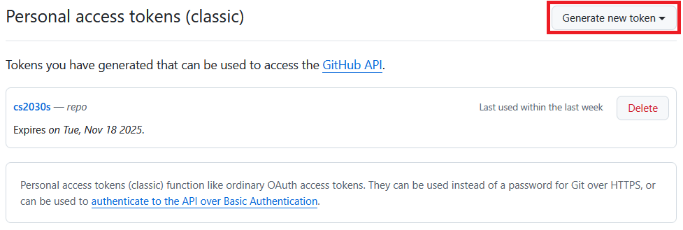
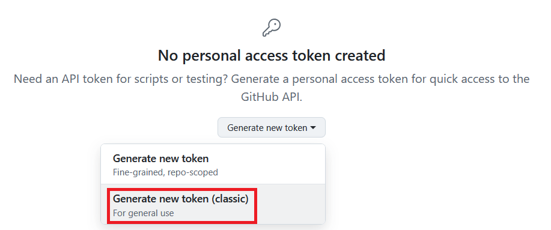
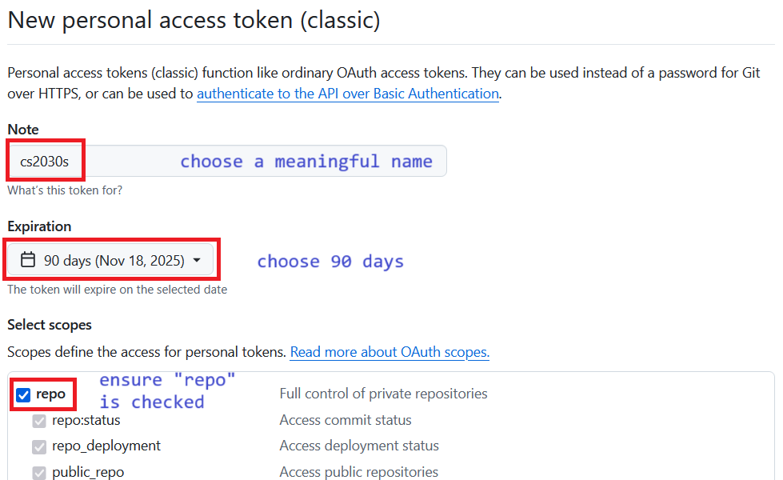
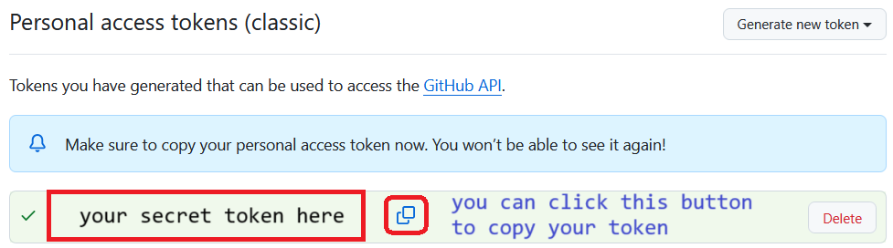
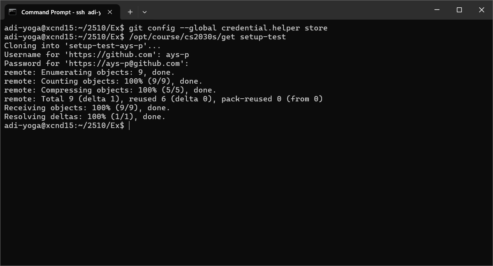

Linking Your PE Account to Your GitHub Account
Prerequisites
- You should already have your SoC Unix account, cluster access, and SoC VPN set up, and be able to
sshinto one of the PE hosts. If you are not able to do this, please look at the guide on programming environments. - You should feel comfortable running basic UNIX commands. If you have not gone through the UNIX guide and got your hands dirty, please look at the guide and play with the various basic Unix commands.
- You should already have a GitHub account and can log into GitHub.com.
- You know how to create and edit a file in Vim
Purpose
You will be using git (indirectly) for retrieving skeleton code and submitting completed assignments. We will set up your accounts on a PE host below so that git will be associated with your GitHub account. This is a one-time setup. You don't have to do this for every assignment.
1. Setting up .gitconfig
Create and edit a file called .gitconfig in your home directory on the PE host, with the following content:
1 2 3 4 5 | |
Your email should be whatever you used to sign up on GitHub (which may not be your SoC or NUS email).
For example, a sample .gitconfig looks like this:
1 2 3 4 5 | |
After saving this file, run:
1 | |
It should return your GitHub username.
It should print your GitHub username as already set. If there is a typo, you need to edit .gitconfig again and reload it by repeating the command above.
2. Setting up Password-less Login
Setting up Token
-
Login to GitHub.com using your account. Ensure that you are using the account you registered for CS2030S.
-
Click on your avatar on the top right corner.

-
Click on "Setting" from the dropdown menu. This will bring you to profile page.

-
On the sidebar on the left, click on "Developer settings". You may need to scroll down as it is at the bottom. This will bring you to github app page.

-
On the sidebar on the left, expand on "Personal access tokens". Then click on "Tokens (classic)". This will bring you to personal access tokens page.

-
Currently, there should not be any personal access token created. Expand on "Generate new token". If you already have a token, you should see the image on the right.
 
-
Click on "Generate new token (classic)".

-
Fill in "Note" with meaningful name. Set "Expiration" to 90 days. Check the "repo" in "Select scopes".

-
Your personal access token will be created. Save this! We will be using it later.

SSH login no longer works. Use token and credential manager technique above. We will store this in credential manager. But for your first connection, you will be prompted a password. Enter (or paste) your token as password to be stored in credential manager.
3. Accept and Retrieve a Test Skeleton from GitHub
We have created an empty lab for you to test if you can correctly retrieve future lab files from GitHub. Complete the following steps:
- Click here https://classroom.github.com/a/uOrkMKIa. You should see a page that looks like the following:

- Click the accept button. Wait a bit and then refresh until you see a "You're ready to go" message.
We will now try to initialize this on PE host. You will need your personal access token on the next few steps.
- On your PE host, initialize the credential manager.
1 | |
- Run the following command to clone into
setup-test.
1 | |
You will then be asked for your username and password.
For the username, enter your github username. For the password, enter or copy your personal access token. Note that there will be nothing written for password.
If everything works well, you should see:
1 2 3 4 5 6 7 8 9 | |

If you have followed the steps above correctly, any subsequent cloning of github repository does not require username and password to be inserted anymore. You can test by accepting ex0 and cloning it once it is ready.